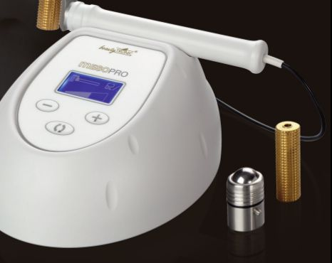
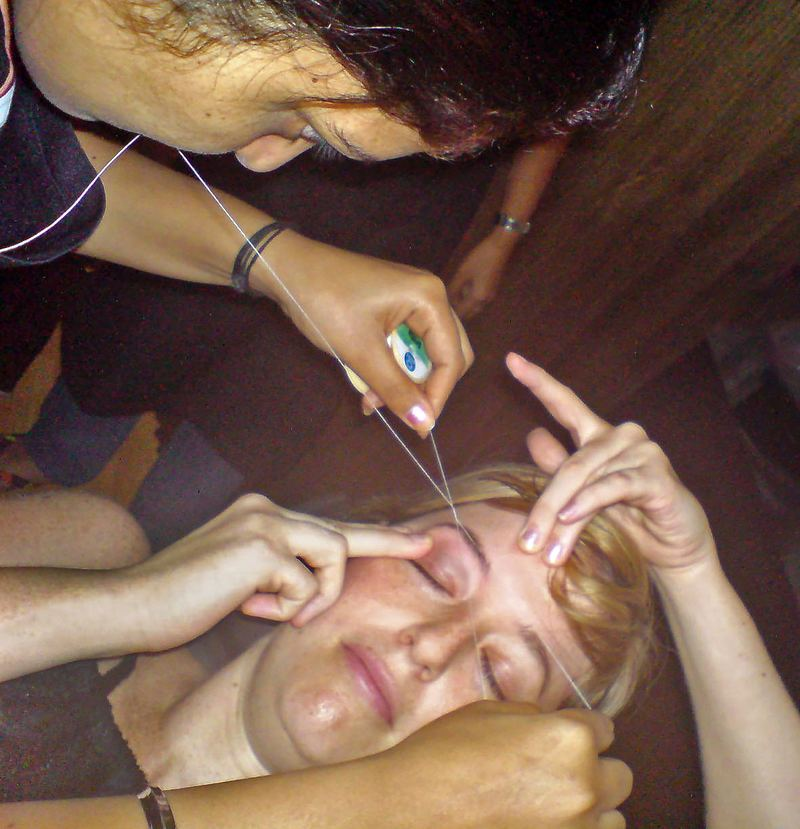
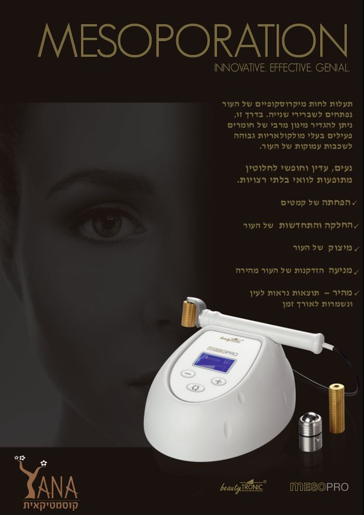

טיפולי פניםFacials
הטיפול שלקוחות חוזרות אליו כבר שנים.The treatment clients have come back for, for years.
קונספט לדוגמה שנבנה עבור יאנה קוסמטיקאית · זה אינו האתר הרשמי של העסקA sample concept built for Yana Cosmetologist · This is not the business’s official website
טיפולי פנים, אנטי־אייג'ינג, אקנה, הסרת שיער וגבות. ברחוב שלום עליכם 1 בחיפה.Facials, anti-ageing, acne care, hair removal and brows, at 1 Shalom Aleichem St, Haifa.
טיפולי פנים, גבות ושעווה, עם יאנה, בחיפה.Facials, brows and waxing, with Yana, in Haifa.
״יאנה מאוד קשובה״“Yana is very attentive”
Inbal Geva · translated from Hebrew
שישה טיפולים, ענף אחד.Six treatments on one branch. גללו והוא יצמח.Scroll and it grows.
הטיפול שלקוחות חוזרות אליו כבר שנים.The treatment clients have come back for, for years.
טיפולים לעור בוגר.Treatments for mature skin.

חומרים פעילים לשכבות העמוקות של העור, במכשיר MesoPro.Active ingredients into the deeper layers of the skin, with a MesoPro device.
טיפול בעור עם אקנה.Care for skin with acne.
הסרת שיער בשעווה.Hair removal with wax.

גבות, לבד או לצד טיפול פנים.Brows on their own, or alongside a facial.
ביקורות בגוגלGoogle reviews
יאנה - אישה מאוד נחמדה ומקצועית. אני שנים עושה אצלה כל מה שקשור לפנים.
“Yana is a very kind and professional woman. For years I’ve been doing everything to do with my face with her.”
יאנה מאוד קשובה, בכל פעם שחומר כלשהן לא התאים לפנים שלי היא ניסתה שוב ושוב עד שמצאה משהו שאני לא רגישה אליו.
“Yana is very attentive: whenever some product didn’t suit my face she tried again and again until she found something I’m not sensitive to.”
במשך שנים ניסיתי למצוא קרמים שיתאימו לפנים שלי ורק אצל יאנה מצאתי כאלה.
“For years I tried to find creams that would suit my face, and only at Yana’s did I find them.”
החלפתי כמה קוסמטיקאיות מאז שאני באיזור, ולבסוף נשארתי אצל יאנה כי היא הכי טובה, ותמיד כיף לבוא אליה ולקשקש איתה.
“I changed a few cosmetologists since I’ve been in the area, and in the end I stayed with Yana because she’s the best, and it’s always fun to come to her and chat with her.”
הקישו על ביקורת כדי להביא אותה קדימהTap a review to bring it forward · כל הביקורות בגוגלAll reviews on Google
בחרו טיפול ויום, וההודעה תיכתב בעצמה.Pick a treatment and a day; the message writes itself.
חיפה. כאן יאנה מקבלת.Haifa. This is where Yana works.

בוואטסאפ או בטלפון: On WhatsApp or by phone: 054-498-4822
ראשון ושלישי עד חמישי 9:00–19:00, שישי 8:00–13:00. בימי שני ובשבת סגור.Sunday and Tuesday to Thursday 9:00–19:00, Friday 8:00–13:00. Closed on Monday and Saturday.
ברחוב שלום עליכם 1, חיפה.At 1 Shalom Aleichem St, Haifa.
לפי העלון שיאנה פרסמה: תעלות לחות מיקרוסקופיות בעור נפתחות לשבריר שנייה, וכך אפשר להחדיר חומרים פעילים לשכבות העמוקות של העור. המכשיר: MesoPro.From the leaflet Yana published: microscopic moisture channels in the skin open for a split second, so active ingredients can reach its deeper layers. The device: MesoPro.
טיפולי פנים, אנטי־אייג'ינג, אקנה, מזופורציה, הסרת שיער בשעווה, סידור ועיצוב גבות.Facials, anti-ageing, acne care, mesoporation, hair removal with wax, and brow shaping.